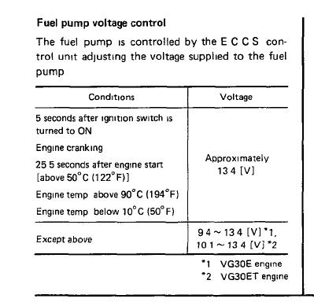
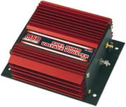

-
I have had a number of email requests for this and keep running into people (usually JWT types) that are having problems "keeping it up" in terms of fuel pressure, due to maintaining the stock fuel pump power supply. I know this is old hat to many of you, but perhaps someone will get some mileage out of it. Feel free to linkinate or post anywhere you want.
The very important thing to note about stock Z31 fuel pump circuit is that it does NOT supply a constant 12 v to the pump if you leave it stock. The ECU controls how much ground it gets, and varies the voltage. With my fuel pressure guage in the car, its obvious just how much it varies your pressure. You need to have a constant source of nice clean 12v to the pump in order to maintain the increased base pressure and anything beyond that. Here's a simple circuit modification that corrects the fluctuating pump voltage problem. I have mine mounted back in the spare tire well.
What you need:
Standard relay that is a normally closed switched side. (I am using layman's terms here)
10 or 12 guage wire
Four female spade connectors
Solder iron, solder, electrical tape orââ¬Â¦.crimp connectors and shrink tubes
1/2 of a brain (optional)
A sheetmetal screw (optional)
Take a blue Nissan relay (everyone should have a box of these things lying around - they are very useful, and "free" at any junkyard), or any standard relay. What you want to do is to create a ground source that is controlled by this relay. I have tapped into my power antenna power supply to activate the switch, since I don't use the power antenna, you can also tap into the power supply for the fuel tank sending unit, or even the power supply to the fuel pump itself (this is the most efficient, but I didn't think of that until I had already sourced it from the antenna). Either of those are hot signal +12 when the ignition is on, and the ecu ground will be controlling when the relay opens anyway. So you activate your relay with that power source. Cut the ground wire that runs from the fuel pump through the harness to the ECU (umm-yeah it is black it think, use an ohmmeter to make sure). (leave plenty of room to solder connectors on both sides). (Use fairly heavy guage wire 10 or 12) Solder/crimp a ground wire to the ECU side of this ground wire and run it to the power supply (the actuator) side of the relay (this will be the ground that completes your circuit from the positive hot ignition source earlier). On the fuel pump side of the ground wire, solder in a wire and connect to one side of the switched section of the relay. On the other side of the switched section of the relay, run another heavy ground wire to any good body ground. I just use one of the screws that goes to the cover on the sending unit.
So now what you have is that when you turn the key ON, the relay gets power from the positive source, and the ECU activates the ground side. This throws the relay switch that allows the body ground to reach the fuel pump and complete the circuit.
We have maintained the fuel ground to the ECU so it thinks everything is normal and just does its thing - it's loaded with the power supply from the relay. Now you will have 12volts full power to your fuel pump whenever the car is on (for five seconds) or running. The reason you have to use a relay is since the fuel pump positive is always on, even when the car is off. The stock fuel pump circuit only gets completed by the ecu when the ecu grounds that wire.
There are other ways you can design this circuit but this one has built in safety: If you wire your pump to run full time whenever the ignition switch is on, you could find yourself in a situation where you are upside down unconscious in a ditch and your fuel pump is still running. NOT GOOD.
This circuit allows the ECU to control the relay. The ecu is pretty smart, you notice how on turning on the key, the pump runs for five seconds and shuts off. Similarly, if the engine stalls out, the ecu shuts off the pump. So by wiring it this way you don't have to listen to the pump running if you are just checking something with the ignition on, and you reduce the chances of dieing in a fiery blaze if there is an accident, but you still get your full power to the fuel pump.
Here is a cheesy diagram:
http://devster.net/roni/86z/Z31%20Fu…plications.doc
[/img]"If you don't hold it....you don't own it" -
Thanks for the write-up Drew. -
Thanks for the writeup Drew! Very good information for people wanting to do this modification. I would have to say the single biggest benefit is no risk of burning out the fuel pump circuit in the ECU. People have reported if you put in an aftermarket pump you can fry this circuit… I'm not exactly sure why because it runs off a relay anyway, but I have always been confused about how this voltage supply feature really works. The ECU actually steps up the voltage to the pump, supplying as much as 13.4v in most conditions shown here from the FSM:

While this modification has worked for MANY others (i've heard at least 10 people say it made a big difference), I tried wiring my walbro to a solid battery source and actually noticed no difference in either the fuel pressure (using a mechanical gauge mounted outside the car) or drivability. Very strange. -
Hey Jason,
I cannot say except for personal experience, it could be a JWT only issue since they dick around with the fuel circuit and introduce other weird problems as well. I experience reduced voltage. The FSM 13.4v would appear to be alternator voltage, since the ecu just controls ground, then you have system voltage going in. 88T fed ECU in my case, but completely whored by jwt. I have had good results and a few others also using this type of circuit.
You will note in the FSM figure you posted it says 9.4 to 13.4 volts, except as above - if you look at the conditions listed in the above it refers to starting, cold running, warming up, and running quite hot. Its hard to determine whether the operating range between 122F and 194f is included in the 13.4v logic. I don't think it is. In all other running conditions you have voltage of 9.4 to 13.4 fluctuating. They should use decimal points.
The diagram shows a direct to battery, but in practice you are using all the harnesses that are already there, so its actually hitting the same fused fuel circuit for the +. I hate to have diagrams that have stuff not terminated to something, hence the battery in the diagram. I don't do electrical shit for a living (as you probably surmise) but I am really handy with Visio
I think the ECU controls voltage in an attempt to reduce pump wear and pressure when its not required - e.g. idling, under cruise or decel. That would reduce system load, and increase pump life, and also reduce the strain on high pressure hoses. Probably Nissan ran some shitty testing numbers on production pumps and put that in to prolong life "long enough"....Without this mod in three cars - 87T, 87na-T, and 86na-T, using the same brain and drivetrain, I get voltage drop. I like to body swap a lot apparently.
It's a ridiculous simple mod, about up to my speed.
Peace"If you don't hold it....you don't own it" -
um actually.... I will simplify it further
take the hot side and connect it to the relay's coil hot and switched hot directly, then run the switched ground to the pump hot and the coil ground to the ecu....
if only you knew the power of the darkside.... -
Let us know how that works out.
Bring extra fusible links
"If you don't hold it....you don't own it" -
Huh?G-E wrote: um actually.... I will simplify it further
take the hot side and connect it to the relay's coil hot and switched hot directly, then run the switched ground to the pump hot and the coil ground to the ecu....
if only you knew the power of the darkside....
Here's my take on this. Basically the ecu does one of two things with the fuel pump.
A) it provides partial voltage by providing a limited ground to the fuel pump directly from the ecu. Pump runs slow.
B) it sends a signal to the fuel pump relay to provide a direct ground to the pump. Pump runs full speed.
I did some testing a while back and it seems the pump goes to condition B near 3000rpm.
Anyway, instead of adding a relay why not just use the existing fuel pump relay and wire the signal wire to a different source? I believe thats what JWT attempts to do. Anyway it shouldnt be hard to find a wire (maybe even the wire for condition A that would switch the relay and provide full power to the pump. Swapping one wire sounds easier than all that other stuff. Am I missing something? -
actually I forgot to say run a new ground to the pump
the idea was to keep the relay triggered by the ecu but the pump voltage directly from switched power
and about them fusible links, since the efi wiring and relay aren't asked to do anything they don't already do, there's no chance that wiring the pump on constantly will fry anything
-
Ok, yeah that makes sense
Sorry I didn't get the previous post. Anyway, I am not interested in playing the games about who is smarter. What I posted works, what you posted probably works too, and Stinky wonders why anyone cares. I will keep this in mind when posting in the future. I am not a master technician or any kind of mad genius of the zcar and I figure shit out and find what works, usually the hard way. Take it, leave it, if it's dead wrong let me know."If you don't hold it....you don't own it" -
Re: Ok, yeah that makes sense
I don't think anyone was criticizing you at all for posting the information about the way you did it. In fact, I'm down right grateful you took the time to type it all up, make a diagram and post it for others to learn from.DrewZee87T wrote: Sorry I didn't get the previous post. Anyway, I am not interested in playing the games about who is smarter. What I posted works, what you posted probably works too, and Stinky wonders why anyone cares. I will keep this in mind when posting in the future. I am not a master technician or any kind of mad genius of the zcar and I figure shit out and find what works, usually the hard way. Take it, leave it, if it's dead wrong let me know.
It just spurred a discussion is all, I wouldn't take it as a bad thing. -
/me sensitive today - sorry
I had a wack day trying to defend plans on how to restructure 23 billion dollars worth of contracts to a bunch of very unfriendly government people whose jobs and seats of power may be impacted. I have been beaten up pretty bad today.
Z's are my hobby I see the potential of the alternate suggestions and the pragmatist says "whatever, this took ten minutes and works". I think the fuel pump thing will impact other projects, so the discussion on the subject is good. Stinky is correct to address the problem directly at the first relay and make it a "one wire switch" mod that can be just another instruction step in the basics, however I haven't had any time to look at that and probably never will. I haven't even attempted to get into the first relay, just to work around a problem.
Peace"If you don't hold it....you don't own it" -
the ecu switches the ground to "on" and varies the resistance to slow the pump down, having an alternate source of power for the relay doesn't help, and having a pure ground to the relay will prevent the ecu from being able to shut it off
so my diagram is correct, always,supply the power to the relay, and use the ecu to trigger the relay ground, relays will generally trigger at anything above 7 volts, but the lowest it could see would be 9 and I'm very sure that will make it click
all this can be done by modifying the harness at the relay and at the blue plug from the pump harness, and once you have it re-taped/loomed it will look factory too -
Just curious if anyone here has tried this unit from MSD? It sounds like a good idea for our application, especially for people maxxing out their 420CC injectors. From the MSD site:
Fuel Pump Booster Adding a turbo or supercharger to your engine is a great way to improve the power of your car. But you have to remember that when more air is being pushed into the engine, the need for additional fuel raises proportionally. Meeting these new fuel demands could mean larger injectors or ECU programming, both which can be pricey. This new Fuel Pump Booster is the economical (and easy) answer for your engineââ¬â¢s new fuel demands. The Booster will supply the electric fuel pump with increased voltage in relation to the manifold boost pressure. As boost pressure increases in the manifold, the MSD Booster will increase the voltage to the electric fuel pump. The amount of voltage is adjustable with a potentiometer from a range of an additional 1.5 volts to a maximum output of 22 volts over a range of 5 ââ¬â 30 psia. Fuel Pump Booster PN 2350 NOTE: Not for use on Pulse Width Modulated EFI systems (no return line)
2006 & 2007 Basketball National Champions! 2005, 6, & 7 Basketball SEC Champions! 2006 Football National Champions! 2006 Football SEC Champions! 2008 SEC Champions! 2008 Football National Champions! First University in history to capture three titles in a single year! I was there at all of them, and it was awesome! Go Gators! -
Just like the Boost-a-pump, those really help out only if your fuel pump is maxed out. The stock ECU gives the fuel pump up to 13.5v anyway, so I'm not sure there would be any benefit besides another cool looking box in the engine bay.CAG8OR wrote: Just curious if anyone here has tried this unit from MSD?
Edit: can EFI pumps really handle 22v for very long? wow. -
btw I was looking at the fsm, the easiest way to accomplish the full pump voltage is put the yellow-black on a switch to a good ground, use the pump priming relay manually for constant battery voltage
and if you clip the ecu ground for the pump, the switch will become an immobilizer

Copyright © 2006–. All rights reserved. Privacy Policy